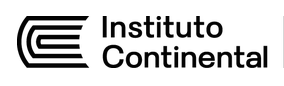
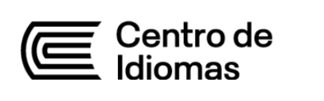
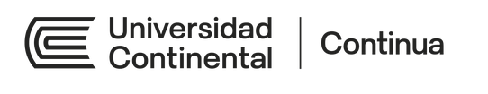
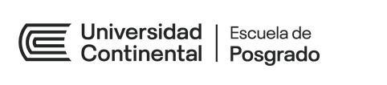

Analizando tu perfil...
Esto puede tomar 10-30 segundos
{{ analysisLabel }} completado
{{ dashGreeting }}
Esto es lo que tienes hoy en CoRA.
Tu avance en CoRA
{{ dashOverallPct }}Crea tu Ruta
{{ dashPerfilLabel }}
Se activa al completar tu ruta
Acompañamiento
Se activa al completar Mi Perfil
📈 Tu promedio por ciclo
📅 Próximamente
⚠️ A vigilar
🗺️ Explora todo CoRA
Lo atenuado con candado se activa a medida que avanzas. También puedes navegar desde el menú de la izquierda.
{{ grp.label }}
📍 Tu progreso
{{ ctxCareer }}{{ st.val }}
{{ st.k }}
Últimas asignaturas llevadas
Ya elegiste tu carrera; CoRA te acompaña en ella.
Encontremos tu ruta de conocimiento
Cuéntanos sobre ti para armar tu ruta de conocimiento.
Elige cómo quieres que CoRA te conozca. El rápido no es un resumen del detallado: cruza menos variables de tu perfil, así que sus recomendaciones son más generales. Úsalo para un primer vistazo, no para decidir tu ruta de conocimiento final.
💡 Opción Rápida
Ideal si tienes poco tiempo o ya tienes una idea clara de tu carrera.
- ✓ Completa en ~2 minutos
- ✓ Recomendaciones generales
- ✓ Perfecto para empezar
💡 Opción Detallada ⭐
La mejor opción para decisiones académicas importantes.
- ✓ Análisis profundo por pasos
- ✓ Recomendaciones precisas
- ✓ Acceso a TODO el ecosistema
- ✓ Plan personalizado de apoyo
{{ stepTitleLabel }}
{{ stepIndexLabel }}{{ q.text }}
{{ q.title }}
{{ q.subtitle }}
{{ q.title }}
{{ q.subtitle }}
Con estas 6 respuestas CoRA ya puede generar tu primera ruta de conocimiento. Podrás completar el perfil con más detalle después.
📚 Tus Rutas de Conocimiento Recomendadas
{{ routesLede }}
{{ r.title }}
🎯 Mejor si buscas: {{ r.bestFor }}
¿Por qué este %?
Asignaturas incluidas
¿Confirmar selección?
Has elegido:
{{ confirmName }}
Próximo paso: ver cómo queda tu malla con esta ruta de conocimiento
Así queda tu malla con la ruta de "{{ mallaCareer }}"
Revisa qué asignaturas añade esta ruta de conocimiento antes de seguir al Ecosistema CIE.
{{ cyc.titleLabel }}
{{ cyc.creditsLabel }}
{{ c.name }}
Equivale a: {{ c.ucName }}
🌐 De tu ruta de conocimiento extracurricular:
🎓 De Ecosistema CIE:
📚 Explorar extracurriculares
Antes de seguir al Ecosistema CIE, mira estas asignaturas complementarias recomendadas para tu ruta de conocimiento.
{{ it.name }}
{{ it.meta }}
Continental International Education (CIE) abarca todas las unidades educativas del grupo Continental. Acá puedes explorar más alternativas que te ayudarán a fortalecer tu perfil profesional y personal.




Así queda tu malla personalizada con la ruta de "{{ mallaCareer }}"
Revisa qué asignaturas añade esta ruta de conocimiento antes de seguir al Ecosistema CIE.
{{ cyc.titleLabel }}
{{ cyc.creditsLabel }}
{{ c.name }}
Equivale a: {{ c.ucName }}
🌐 De tu ruta de conocimiento extracurricular:
🎓 De Ecosistema CIE:
Desde aquí también puedes ir a dos partes: ninguna bloquea a la otra
🧭 ¿Quieres saber quién eres detrás de esta ruta de conocimiento?
Tu perfil de identidad explica por qué esa ruta de conocimiento tiene sentido para ti, y hace que tu horizonte laboral salga hecho a tu medida, no genérico.
{{ it.label }}
{{ it.caption }}
18 preguntas · menos de 3 minutos · puedes hacerlo ahora o después
Tu ruta de conocimiento ya está guardada. El perfil de identidad la enriquece, pero no la cambia.
🧭 Ya conoces tu perfil de identidad
Sigue hacia tu horizonte laboral para ver, con datos reales, a dónde te puede llevar esta ruta de conocimiento.
📈 ¿Ya sabes cómo te está yendo en tus asignaturas?
Acompañamiento Académico cruza tus notas con el histórico de cada asignatura y te avisa antes de que curses las que se te pueden complicar.
{{ it.label }}
{{ it.caption }}
No depende de tu perfil ni de tu horizonte: puedes entrar cuando quieras.
🌍 Ecosistema CIE
Continental International Education · Formación que complementa tu carrera, más allá de la malla.
{{ langCount }}
Idiomas
{{ posgradoCount }}
Posgrados
5
Frentes de formación
Lo que CoRA te recomienda
{{ ecoRecoCount }} propuestas elegidas de todas las unidades del Ecosistema CIE, pensadas para fortalecer tu perfil de egreso según tu cuestionario inicial.
{{ rc.name }}
{{ rc.why }}
Llevas {{ ecoAddedCount }} propuestas en tu plan. ¿Quieres ver todo lo que ofrece el CIE?
Un recorrido por el ecosistema
- ✓ Tu ruta de conocimiento ya quedó elegida y confirmada en Mis Rutas de Conocimiento
- ✓ Abre las 5 secciones de abajo, en el orden que quieras
- ✓ Puedes ir y volver cuando quieras: lo que ya abriste queda guardado, no tienes que hacerlo todo de una sesión
- ✓ Cuando termines las 5, se activa "Continuar" para seguir a tu malla
🧭 Tu recorrido por el CIE
{{ ecoCountLabel }}Busca por tema o interés en todo el ecosistema: filtra idiomas, plataformas de Continua y programas de posgrado a la vez.
📋 Tu Malla Curricular
Ruta: {{ mallaCareer }} · 10 ciclos · {{ mallaCreditsProgressLabel }}
Malla base, sin ninguna ruta de conocimiento resaltada · 10 ciclos · {{ mallaCreditsProgressLabel }}
Esta es tu propuesta inicial: puedes seleccionar cualquier asignatura para conocer más de ella, o moverla a otro ciclo si prefieres avanzarla o dejarla para después.
{{ cyc.titleLabel }}
{{ cyc.creditsLabel }}
{{ c.name }}
Equivale a: {{ c.ucName }}
🌐 De tu ruta de conocimiento extracurricular:
🎓 De Ecosistema CIE:
⭐ Tus electivos del Ecosistema CIE
Agregas los que quieras, sin límite: eliges uno por uno y confirmas. No se suman solos ni cuentan para los {{ mallaTotalCredits }} créditos de tu carrera.
Todavía no elegiste ninguno, usa "Agregar extracurricular" en el ciclo que quieras.
De Ecosistema CIE, para después de egresar: {{ ecoAddedNoCycleLabel }}
{{ extModalTitle }}
{{ extModalCount }} · sin límite de créditos
🎉 ¡Tu malla está lista!
Terminaste de personalizar tu camino en {{ summaryRouteName }}. Cada asignatura y cada elección que hiciste hoy son un paso más cerca de la persona profesional que quieres ser.
📋 Resumen de tu malla
Ruta: {{ summaryRouteName }} · {{ summaryKindLabel }}
{{ st.val }}
{{ st.label }}
🎯 Cómo se correlaciona con tu perfil
Según tus respuestas del formulario, esta ruta de conocimiento tiene {{ summaryMatchLabel }}.
Ideal para: {{ summaryBestFor }}
✨ Beneficios
{{ b.label }}
Puedes volver a personalizar tu malla cuando quieras, lo que elegiste queda guardado.
🗂️ Historial de rutas de conocimiento guardadas
Desde aquí puedes ir a dos partes: ninguna bloquea a la otra
🧭 ¿Quieres saber quién eres detrás de esta ruta de conocimiento?
Tu perfil de identidad explica por qué esa ruta de conocimiento tiene sentido para ti, y hace que tu horizonte laboral salga hecho a tu medida, no genérico.
{{ it.label }}
{{ it.caption }}
18 preguntas · menos de 3 minutos · puedes hacerlo ahora o después
Tu ruta de conocimiento ya está guardada. El perfil de identidad la enriquece, pero no la cambia.
🧭 Ya conoces tu perfil de identidad
Sigue hacia tu horizonte laboral para ver, con datos reales, a dónde te puede llevar esta ruta de conocimiento.
📈 ¿Ya sabes cómo te está yendo en tus asignaturas?
Acompañamiento Académico cruza tus notas con el histórico de cada asignatura y te avisa antes de que curses las que se te pueden complicar.
{{ it.label }}
{{ it.caption }}
No depende de tu perfil ni de tu horizonte: puedes entrar cuando quieras.
Tu perfil de identidad
Dinos qué tanto te gustaría hacer cada actividad
nada Poco Bastante Mucho
{{ row.text }}
Responde las 18 preguntas, tu resultado aparece automáticamente al terminar.
✨ Tu perfil de identidad · CoRA
{{ coraArchetype }}
{{ coraNarrative }}
¿De dónde salen tus respuestas? {{ coraSourceNote }}
{{ coraSourceExtra }}
Tu Perfil CoRA es quién eres hoy, en tus 6 dimensiones. El siguiente paso es tu Horizonte: ahí usamos este mismo perfil para mostrarte a dónde te puede llevar.
Gráfico Radar: 6 Dimensiones
{{ d.label }}
{{ d.desc }}
{{ d.resourceTipo }}
{{ d.resourceTitulo }}
{{ d.resourceDesc }}
💡 Recomendaciones para Ti
✓ Fortalezas:
- • {{ ds.label }} → {{ ds.why }}
⚠️ Área de mejora:
- • {{ dimWeak.label }} → {{ dimWeak.why }}
📚 Recursos recomendados:
- • {{ tr.label }}
Comparte tu perfil
Guárdalo o llévalo a tu perfil de LinkedIn.
La versión para LinkedIn es una imagen que puedes subir en la sección "Destacado" de tu perfil. Ambas descargas son una maqueta: en la versión real generarían el archivo real.
🌅 Tu Horizonte Laboral
Ruta: {{ mallaCareer }}
Tu Ruta te dice qué vas a estudiar. Tu Horizonte te muestra los trabajos a los que esa ruta de conocimiento te lleva: por eso van juntos.
{{ hzProfileConnect }}
✨ Completa tu Perfil CoRA para ver por qué estos roles te calzan.
{{ horizonteGreeting }}
Roles a los que conecta
⭐ Toca un rol para guardarlo como tu meta, o agrega el tuyo.
Dónde podrías trabajar
⭐ Toca una empresa para guardarla como tu meta, o agrega la tuya.
🧭 Mi plan profesional
Este espacio es tuyo: guarda con la estrella lo que te propone CoRA, o agrega directamente lo tuyo: un rol, una empresa, un contacto, una idea.
{{ g.emoji }} {{ g.label }} {{ g.tagLabel }}
Y si quieres crear lo tuyo
⭐ Toca una idea para guardarla como tu meta, o agrega la tuya.
Una historia para inspirarte
{{ hzStoryShort }}
Por: {{ hzStoryAttribution }}
Cómo se ve ese mundo
{{ hzWorldTeaser }}
Para este tipo de trabajo
Para desarrollarte profesionalmente
✨ {{ hzClosing }}
📊 Cómo se ve ese mundo hoy
Demanda
{{ hzDemand }}
Salario de entrada
{{ hzSalary }}
Proyección
{{ hzProjection }}
Roles a los que conecta
⭐ Toca un rol para guardarlo como tu meta, o agrega el tuyo.
🧭 Mi plan profesional
Este espacio es tuyo: guarda con la estrella lo que te propone CoRA, o agrega directamente lo tuyo: un rol, una empresa, un contacto, una idea.
{{ g.emoji }} {{ g.label }} {{ g.tagLabel }}
Tu ruta de conocimiento ya cubre
{{ hzCoverageSummary }}
Brecha frecuente
{{ hzGapSummary }}
Te están buscando en
🚀 {{ hzTalentLabTeaser }}
{{ rm.note }}
Conecta con egresados
Personas que estudiaron en Continental, no que trabajan ahí, para pedir consejos o hacer networking.
Empleabilidad
El JobLab de Continental: bolsa de trabajo, servicios de empleabilidad y eventos para egresados y estudiantes.
Hacia dónde te lleva
{{ hzRolesIntro }}
¿Dónde podrías trabajar?
{{ c.name }} {{ c.desc }}
¿Y si quieres crear lo tuyo?
{{ v2.name }} {{ v2.desc }}
{{ hzStoryFull }}
Por: {{ hzStoryAttribution }}
Cómo se ve ese mundo
{{ hzWorldFull }}
Qué te falta para llegar
{{ hzSkillsIntro }}
Para este tipo de trabajo
{{ sk.label }}
Para desarrollarte profesionalmente (en cualquier camino)
{{ sk.label }}
Cómo se ve ese mundo
{{ w.label }}
Qué te falta para llegar
{{ hzGapIntro }}
Para los roles que más se piden
{{ g.label }}
Para destacar profesionalmente
{{ g.label }}
🎓 Microcredencial sugerida
{{ hzMicrocredential }}
Hacia dónde te lleva
{{ hzRolesIntro }}
{{ c.name }} {{ c.desc }}
Y si piensas en emprender
{{ v2.name }} {{ v2.desc }}
Da el salto a TalentLab
{{ hzTalentLabDetail }}
💬 Pregúntale al Asistente CoRA
Toca una pregunta y sigue la conversación con IA, o escribe la tuya.
📄 Crea mi CV
Armamos tu CV con lo que ya sabemos de ti en CoRA y lo que nos cuentes aquí: tú eliges el formato.
¿Ya tienes un CV armado?
Súbelo y lo usamos como base: así te saltas las preguntas de experiencia, proyectos, habilidades, idiomas y certificaciones.
1. Elige un formato
✓ Ya lo tenemos de tu perfil CoRA
{{ cvName }} · {{ cvCareer }}, ciclo {{ cvCycle }}
2. Objetivo profesional
💡 Sugerido: "{{ cvObjetivoSuggestion }}"
3. Experiencia previa
Prácticas, trabajos, voluntariados, lo que tengas. Si todavía no tienes, puedes saltar esto.
{{ e.rol }}, {{ e.empresa }}
{{ e.fechas }}
{{ e.logro }}
4. Proyectos
Trabajos de asignatura, proyectos personales o de algún club, útil si todavía no tienes mucha experiencia laboral.
{{ p.nombre }}
{{ p.desc }}
5. Habilidades
💡 De tu Perfil CoRA: {{ cvFortalezaSuggestion }}
6. Idiomas
7. Certificaciones y asignaturas extra
✓ De tu Ecosistema CIE (se agregan solas): {{ cvEcoCertsLabel }}
8. Datos de contacto
Tu correo institucional ({{ cvEmail }}) ya va incluido.
📥 La descarga es una maqueta: en la versión real este botón exportaría el CV en PDF.
{{ cvName }}
{{ cvCareer }} · Ciclo {{ cvCycle }}
{{ cvEmail }}
Objetivo
{{ cvObjetivo }}
Habilidades y fortalezas
Experiencia y proyectos
{{ e.rol }}, {{ e.empresa }}
{{ e.logro }}
{{ p.nombre }}
{{ p.desc }}
Formación académica
{{ cvCareer }}, Universidad Continental
Ciclo {{ cvCycle }} en curso · Promedio {{ cvAvgLabel }}
Asignaturas destacadas: {{ cvTopCourses }}
Idiomas
Certificaciones y asignaturas
{{ cvEcoCertsLabel }}
{{ c.label }}
Acompañamiento Académico
🔴 ActivoPredictibilidad académica
{{ predictLede }}
🌱 {{ predictNoRiskMsg }}
Basado en el historial de estudiantes en esta asignatura, no refleja cómo te está yendo a ti ahora mismo.
{{ p.course }}
{{ p.levelLabel }}{{ p.cycleLabel }}
El plan no es solo lo que CoRA detecta: puedes reforzar cualquier otra asignatura de {{ acompCycleLabel }} que sientas floja.
➕ Reforzar otra asignatura
Asignaturas de {{ acompCycleLabel }}, elige las que quieras, sin límite.
📋 Plan de Acompañamiento Personalizado
Dos tipos de apoyo, cada uno para algo distinto: nunca se mezclan.
{{ sp.icon }} {{ sp.name }}
{{ sp.role }}
{{ sp.desc }}
⏱️ {{ sp.duracion }}
📈 {{ sp.progreso }}
💡 {{ sp.porque }}
🧭 Recursos de Acompañamiento
Programas reales de la universidad, tú decides si los usas.
{{ r.icon }} {{ r.name }}
{{ r.role }}
{{ r.desc }}
⏱️ {{ r.duracion }}
📈 {{ r.progreso }}
💡 {{ r.porque }}
📌 {{ acompCycleLabel }}: Acciones Recomendadas Actual
Este plan es tuyo: agrega o quita semanas y actividades cuando quieras.
{{ wk.label }}
{{ a.topicLabel }}
📅 Agregar semana a tu plan
Semana
Actividad
Tutor CoRA te ayuda con dudas de una asignatura específica que estás llevando. El Asistente CoRA (el botón flotante) te orienta en cualquier momento sobre la plataforma en general.
📝 Practico para mi Examen
Prepárate con simulacros basados en exámenes reales.
1
Selecciona la Asignatura
2
Elige los Temas
🆕 O agrega tus propios temas (opcional):
Máximo 5 temas adicionales
3
Nivel de Dificultad
{{ pQLabel }}
{{ pQTopic }}
{{ pQText }}
{{ pDetailTopic }}
{{ pDetailQ }}
📖 Explicación:
{{ pDetailExplain }}
{{ pScoreLabel }}
Simulacro completado: {{ pCourseName }}
{{ pCorrectLabel }}
Correctas
{{ pWrongLabel }}
Incorrectas
{{ pXpLabel }}
CoRAzones ganados
{{ pXpDetail }}
Revisión por pregunta:
🎴 Mis Flashcards
Crea y practica tarjetas para memorizar conceptos clave.
1
Selecciona la Asignatura
2
Elige un Set
📚 Economía I: Capítulo 3
5 tarjetas · 6 min de estudio
3
Modo de Estudio
{{ fCardLabel }}
REVERSO
{{ fBack }}
FRENTE · Click para voltear
{{ fFront }}
¿Sabías esta respuesta?
¡Set Completado!
5 tarjetas revisadas
{{ fKnow }}
😊 Dominadas
{{ fMaybe }}
🔁 Para repetir
{{ fNo }}
😞 Para repasar
{{ fXpLabel }}
{{ fXpDetail }}
💬 Tutor CoRA: 24/7
Responder dudas académicas Explicar conceptos difíciles Guiarte en tu perfil y rutas de conocimiento Respuesta inmediata, 24/7
💬 Tutor CoRA vs 👨💼 Asesor
Tutor CoRA (aquí): Dudas académicas, ejercicios
Asesor de Acompañamiento Académico: Consejería de carrera, seguimiento
{{ tutorCourseDesc }}
{{ tutorSourcesLabel }}
Modo Estudio activo
CoRA revisa estos documentos de la asignatura antes de responder, y te dice de cuál sale cada respuesta.
📊 Tu Progreso en CoRA
Progreso General
{{ overallLabel }}
🎯 Próximas actividades recomendadas
{{ ng.label }}
{{ ng.when }}{{ ng.why }}
Desglose: Recomendador
💜 Tu Progreso en CoRAzones
📈 Has ganado {{ xpThisCycle }} CoRAzones este ciclo
{{ xpLabel }}
CoRAzones acumulados
Nivel: Explorador
Próximo: {{ xpNext }} CoRAzones
🏅 Insignias: se ganan con tus CoRAzones
{{ b.name }}
{{ b.hint }}
🎯 ¿Cómo gano CoRAzones?
🎁 Certificados y canjes
Tu saldo: {{ xpLabel }} CoRAzones{{ rw.name }}
{{ rw.costLabel }}
🏅 Tabla de posiciones
PróximamenteCuando se active, podrás comparar tu avance con el de tu cohorte. Tú decides si apareces con tu nombre o en anónimo.
📈 Estadísticas Detalladas
Simulacros:
- Total: 3
- Promedio: 76/100
- Mejor: 85/100 (Matemática)
Flashcards:
- Sets: 12
- Tarjetas: 284
- Dominadas: 67%
👤 Mi Perfil
{{ studentName }}
{{ studentEmail }}
{{ topMeta }}
🎨 Personaliza tu avatar
📝 Información Personal
📚 Información Académica
🤝 Compartir mi progreso
Decide quién puede ver tu avance. Puedes cambiarlo cuando quieras.
{{ sr.label }}
{{ sr.desc }}
Recordatorio
{{ routineNudge }}
Alerta de Acompañamiento
⚙️ Configuración
♿ Accesibilidad: Tamaño de texto
🎨 Tema Visual
Temas visuales
🔔 Notificaciones
{{ n.label }}
{{ n.desc }}
ℹ️ Información y Ayuda
📱 CoRA está pensado para escritorio y laptop por ahora. La versión para celular es un desarrollo futuro.
CoRA 2.0, Versión 2.1.0, © 2026 Universidad Continental